Content of type 'collection'
X_1–X_19
The foundational centers of classical triangle geometry: the incenter, centroid, circumcenter, orthocenter, nine-point center, symmedian point, Gergonne, Nagel, Mittenpunkt, Spieker, Feuerbach, Fermat, isodynamic, Napoleon, and Clawson points.
X_20–X_30
Classical centers lying on the Euler line X_2 X_3, including the De Longchamps point, Schiffler point, Exeter point, far-out point, homothetic center of the orthic and tangential triangles, and the Euler infinity point.
X_31–X_58
2nd and 3rd power points, the Bevan point, Brocard midpoint, Kosnita point, and internal and external centers of similitude of the circumcircle, incircle, and nine-point circle.
X_59–X_97
Isogonal conjugates (X_59–X_74) and isotomic and cross conjugates (X_75–X_97) of the classical centers X_1–X_58.
X_98–X_112
Notable points on the circumcircle of ABC, including the Tarry point, Steiner point, anticomplementary, Feuerbach, Kiepert, and Jerabek antipodes, and centers derived from circumcircle mappings.
X_113–X_139
Points on the nine-point circle (X_113–X_139), centers of the Kiepert, Feuerbach, and Jerabek rectangular hyperbolas, and centers transferred to the orthic triangle.
X_140–X_190
Complements, anticomplements, and classical centers evaluated on the medial, orthic, tangential, and excentral triangles, together with congruent isoscelizer, equal detour, and Ajima-Malfatti points.
X_191–X_236
Perspectors of the cevian triangle of P and the anticevian triangle of Q (P-Ceva conjugates of Q) for classical triangle centers.
X_237–X_248
Intersections of line PQ with the trilinear polar of the isogonal conjugate of P (P-line conjugates of Q).
X_249–X_297
Isogonal conjugates of centers X_115–X_248, together with cross conjugates and X_2-Hirst inverses.
X_298–X_350
Isotomic conjugates of previously cataloged triangle centers, together with X_2-Hirst inverses and radical centers.
X_351–X_400
The Parry circle center, Morley trisector centers, Yff equal-parallelians, trisected-perimeter, and equilateral-cevian points, Kenmotu point, and centroids of pedal and cevian triangles.
X_401–X_484
Centers lying on the Euler line generated by X_k-substitutions and Hirst inversions, followed by the Tixier point, Ajima-Malfatti radical center, and Evans perspectors.
X_485–X_510
Inner and outer Vecten points and square-associated centers (Vierkanten in een driehoek, X_485–X_495), harmonic conjugates, and isoscelizer-associated centers (X_503–X_510).
X_511–X_565
Points on the line at infinity x + y + z = 0 (X_511–X_526, isogonal conjugates of circumcircle points), unit vector direction centers, and classical midpoints.
X_566–X_642
Centers on the Brocard axis X_3 X_6 whose circles cut equal chords on the sidelines of ABC (X_566–X_584), congruent shrunk insquares points, and centers contributed by Bernard Gibert (X_616–X_642).
X_643–X_693
Trilinear multipliers for the Kiepert and Yff parabolas, crossdifferences of classical centers, and trilinear poles of central lines.
X_694–X_768
Even trigonometric (p, q) points on the circumcircle and line at infinity, paired with their isogonal conjugates.
X_769–X_843
Odd trigonometric o-(p, q) points on the circumcircle and line at infinity, paired with their isogonal conjugates.
X_844–X_900
Hatzipolakis-Yiu points, the Yiu angle point (X_848), Kiepert hyperbola multipliers, Hirst inverses, and Euler line intercepts.
X_901–X_1000
Star-named centers (Agena, Achernar, Algenib, Alcor), Ehrmann points, anticomplements, and midpoints of classical triangle centers.

X_1001–X_1069
Midpoints of classical centers, Euler line intercepts, collinearity intersections, cevapoints, and pure-angle trilinear centers.
X_1070–X_1114
Cross conjugates, trilinear squares and cubes of classical centers, and the intersections of the Euler line with the circumcircle (X_1113, X_1114).
X_1115–X_1165
Morley-Taylor-Marr centers, Hofstadter points, the Ehrmann congruent squares point (X_1144), Grebe triangle centers, and star-named points (Aldebaran, Algjebbah, Altair, Altais).
X_1166–X_1208
1st, 2nd, and 3rd Saragossa points (Q, Q', Q″) constructed from the cevian and circumcevian triangles of classical centers.
X_1209–X_1285
Isogonal and isotomic conjugates of the Saragossa points, Sharygin points, and the Lemoine homothetic center (X_1285).
X_1286–X_1311
Concurrence points on the circumcircle of the circumcircles of AB'C', A'BC', and A'B'C, where A'B'C' is the reflection of ABC in P.
X_1312–X_1353
Moses orthocentroidal-Euler intersections, circumcircle inverses, 1st and 2nd Wernau points (X_1337, X_1338), and similicenters of the circumcircle, nine-point circle, orthocentroidal circle, and Brocard circle.
X_1354–X_1392
Polynomial centers on the incircle generated by the Brisse transform (X_1354–X_1367), Rigby and Griffiths points, and complementary and anticomplementary conjugates.
X_1393–X_1477
Fixed-point P-beth conjugates of P and harmonic conjugates along central lines.
X_1478–X_1511
The Johnson-Yff circle center, tangential-of-tangential perspectors, star-named centers (Bellatrix, Betelgeuse, Biham), and Napoleon and Fermat crosssums.
X_1512–X_1600
Orthojoins H(X) — orthopoles of the trilinear polars of isogonal conjugates (X_1512–X_1568) — together with Moses circle similicenters and star-named centers (Capella, Caph, Cebalrai, Celaeno, Chertan, Chort).
X_1601–X_1661
Perspectors of the tangential triangle and the circumcevian triangle of P (X_1601–X_1634), tripolar centroids (X_1635–X_1651), and Evans and Grinberg perspectors.
X_1662–X_1706
Internal and external centers of similitude among the circumcircle, incircle, nine-point circle, Brocard circle, 1st and 2nd Lemoine circles, Apollonius circle, and Bevan circle.
X_1707–X_1788
Centers generated by the Mimosa transform M(X) of classical triangle centers.
X_1789–X_1823
Inverse Mimosa transforms of classical triangle centers and aleph conjugates.
X_1824–X_1907
Isogonal conjugates of the inverse Mimosa transforms (Z(X)) of classical triangle centers.
X_1908–X_2000
Midpoints, crosssums, crossdifferences, trilinear poles, and trilinear products of bicentric pairs PU(k) (X_1908–X_1982), Vega transforms, and orthocorrespondents (X_1992–X_2000).